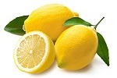

Lemon
The lemon is a small, oval-shaped fruit which is approximately two to three inches in diameter. Its outer peel is bright yellow in color and contains essential oil that is mainly limonene. Like the lime, lemon has a sourish and acidic taste, but when consumed has an alkaline effect in the stomach.
Onion
We come in various shapes and colours, the most common being round to oval-shaped and slightly smaller than a tennis ball. Inside, we have thickish, moist, leaf bases which form concentric rings from the centre outwards. You can also buy torpedo-shaped onions, globe-shaped onions with really flattened tops and bottoms, and small egg-shaped onions which are often sold as pickling onions. In addition, you can choose white, brown, red or yellow onions.Chili

A green chilli is an important star in Indian cooking. This spice is grown throughout the year and so there is no scarcity and a good quantity is exported. Chillies are used with or without stalks. Green chillies are available fresh, dried, powdered, flaked, in oil, in sauce, bottled and pickled. It spices up a bland meal.
Bajara
It is adapted for drought and poor soil fertility. In world the Bajara crop ranks sixth in importance followed by wheat, rice, maize, barley and jawar. India and Africa produce 92 % of world population. Bajara originated in Africa from where it was imported into India in the early days. The states growing bajara in large scale are Rajasthan, Gujarat, Maharashtra, Uttar Pradesh, Haryana and Punjab.
Maize
Maize is the largest crop in China, and is grown throughout the country from the spring maize belt in northeastern region to the southwestern mountain spring maize belt. In 2012, maize was planted on 3.50 million hectares and the total production of corn was 206 million tons, accounting for 31.9% and 35.7% of the total areas and production of the cereal crops.
Pomegranate
The pomegranate fruit is an apple shaped fruit that is red in color on the outside. Inside the pomegranate fruit, there are many small seeds, the pomegranate seeds. The attendance of these little seeds in the pomegranate fruit makes the fruit rather hard to eat but you don't have a choice as there is not much of a flesh which can be separated from the seed. Most people like to eat the pomegranate fruit raw but some use in cooking.
Tomato
Tomato, a pulpy nutritious fruit commonly eaten as a vegetable, is another wonderful gift of the Mayans. This humble vegetable of Central America has seized the attention of millions of health seekers for its incredible phyto-chemical properties. Interestingly, it has more health-benefiting compounds than that of an apple!
Rice
Rice is different from all other crops in that it is usually grown in a flooded field. The base of the rice stalk will be under water most of the growing season. Rice can be grown on dry ground and is sometimes grown in that manner in developing countries, but the field yields are much lower and quality is lower with dry land rice. Rice is essentially a type of grass. It is an annual and happens to grow well in water.
Soyabean
Soyabean arrivals have commenced in the key-growing States of Madhya Pradesh and Maharashtra and the trade is of the view that the crop will be marginally higher than last year. This is despite a drop in acreage during the kharif season following a delay in the Monsoon.
Wheat
Wheat is the dominant crop in temperate countries being used for human food and livestock feed. Its success depends partly on its adaptability and high yield potential but also on the gluten protein fraction which confers the viscoelastic properties that allow dough to be processed into bread, pasta, noodles, and other food products.
Turmeric
Turmeric (Curcuma longa) is a rhizomatous herbaceous perennial plant of the ginger family, Zingiberaceae. It is native in southwest India, and needs temperatures between 20 and 30°C (68 and 86°F) and a considerable amount of annual rainfall to thrive.Plants are gathered annually for their rhizomes, and propagated from some of those rhizomes in the following season.
Sesame

Sesame seed is one of the oldest oilseed crops known, domesticated well over 3000 years ago. It was a major summer crop in the Middle East for thousands of years, as attested to by the discovery of many ancient presses for sesame oil in the region.[2] Sesame is highly tolerant to drought like conditions, making it suitable to grow where other crops may fail.